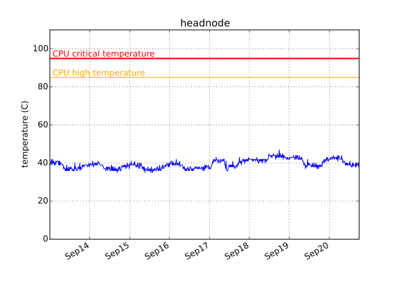

2014-11-23 15:00
| host name | disk | time checked | overall health | power_on hours | pre-fail symptons |
|---|---|---|---|---|---|
| headnode | /dev/sda | Sun Nov 23 03:00:01 2014 PST | PASSED | 8689 | NONE (Raw_Read_Error_Rate = 0. Reallocated_Sector_Ct = 0. ) |
| headnode | /dev/sdb | Sun Nov 23 03:00:01 2014 PST | PASSED | 7565 | NONE (Raw_Read_Error_Rate = 0. Reallocated_Sector_Ct = 0. ) |
| headnode | /dev/sdc | Sun Nov 23 03:00:01 2014 PST | PASSED | 4035 | NONE (Raw_Read_Error_Rate = 0. Reallocated_Sector_Ct = 0. ) |
| headnode | /dev/sdd | Sun Nov 23 03:00:01 2014 PST | PASSED | 4083 | NONE (Raw_Read_Error_Rate = 0. Reallocated_Sector_Ct = 0. ) |
| headnode | /dev/sde | Sun Nov 23 03:00:02 2014 PST | PASSED | 4087 | NONE (Raw_Read_Error_Rate = 0. Reallocated_Sector_Ct = 0. ) |
| node01 | /dev/sda | Sun Nov 23 03:00:01 2014 PST | PASSED | 8923 | NONE (Raw_Read_Error_Rate = 0. Reallocated_Sector_Ct = 0. ) |
| node02 | /dev/sda | Sun Nov 23 03:00:01 2014 PST | PASSED | 8827 | NONE (Raw_Read_Error_Rate = 0. Reallocated_Sector_Ct = 0. ) |
| node03 | /dev/sda | Sun Nov 23 03:00:01 2014 PST | PASSED | 8824 | NONE (Raw_Read_Error_Rate = 0. Reallocated_Sector_Ct = 0. ) |
| node04 | /dev/sda | Sun Nov 23 03:00:01 2014 PST | PASSED | 2198 | NONE (Raw_Read_Error_Rate = 0. Reallocated_Sector_Ct = 0. ) |
| node05 | /dev/sda | Sun Nov 23 03:00:01 2014 PST | PASSED | 1819 | NONE (Raw_Read_Error_Rate = 0. Reallocated_Sector_Ct = 0. ) |
| node06 | /dev/sda | Sun Nov 23 03:00:01 2014 PST | PASSED | 2194 | NONE (Raw_Read_Error_Rate = 0. Reallocated_Sector_Ct = 0. ) |
2014-07-24: node05 goes online
2014-07-20: Data is missing between July 18 and 20 due to power outage, causing the weirdly looking straight line in this time interval.
